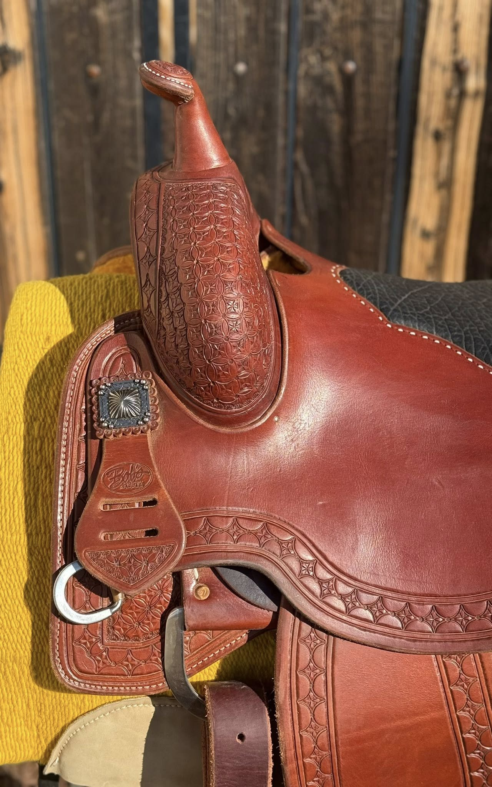
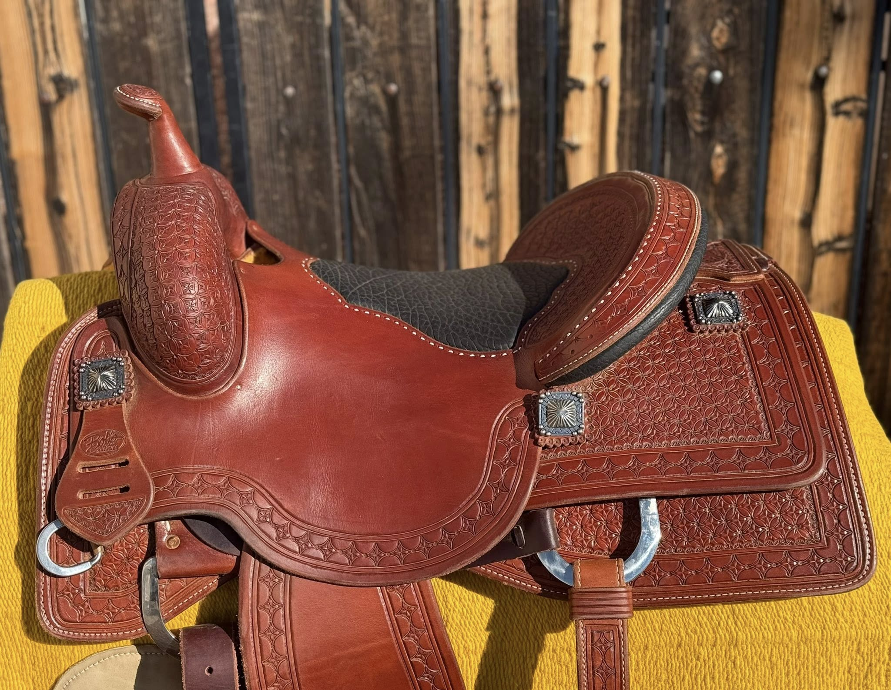
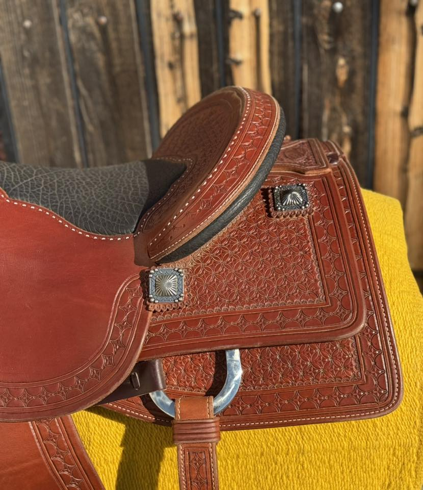
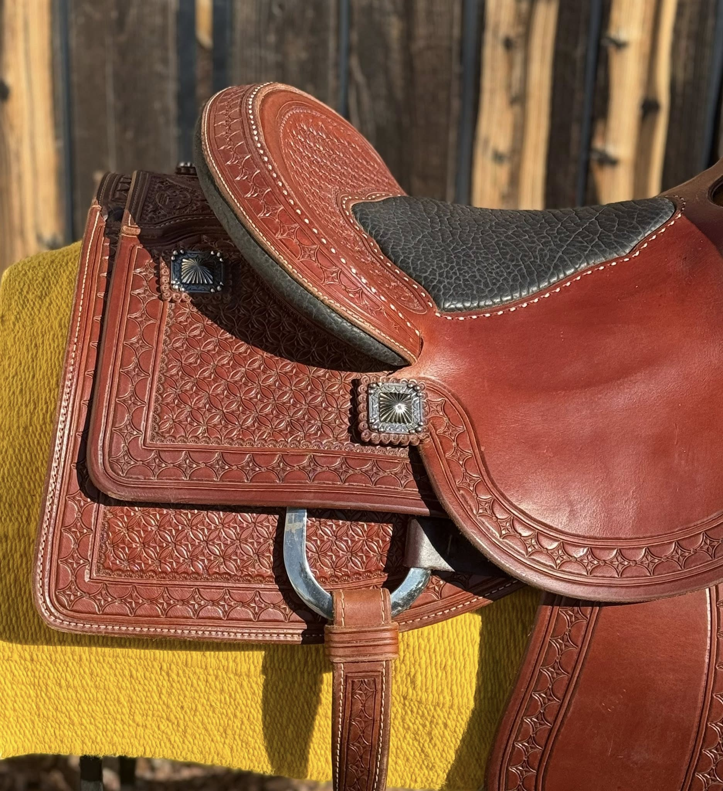
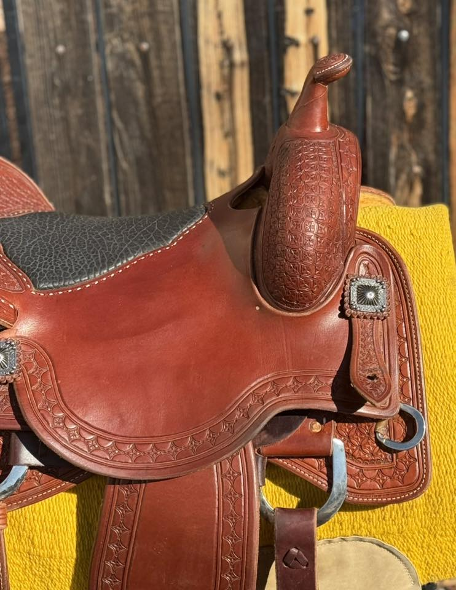

Lady Cowhorse by Bob's Custom — 15½" Star Tooling, Brand New
$4,995
| Maker | Bob's Custom Saddles |
|---|---|
| Model | Lady Cowhorse |
| Seat Size | 15½" |
| Tree Width | Contact for fit details |
| Leather | Mahogany |
| Tooling | Star/cross/cathedral pattern throughout |
| Seat | Black elephant-print insert |
| Hardware | Square silver sunburst conchos |
| Condition | Brand new |
This Lady Cowhorse from Bob's Custom Saddles is brand new — never ridden. The tooling pattern is a distinctive star/cross/cathedral design that sets this build apart from standard basketweave or floral models. Rich mahogany leather covers the swell, skirt, and fender panels, accented by square silver sunburst conchos at each dee. The black elephant-print seat insert adds a bold contrast and functional grip.
At 15½ inches, this is a true lady's fit — purpose-built for the female reiner or cowhorse competitor who wants a new saddle at a below-retail price. Condition is unridden new. Contact David to discuss tree width fit for your horse.
Shipping available. David ships nationwide. Contact for a quote to your zip code.
Inspected & certified by David Solum — 40+ years in reining saddles
Inquire About This Saddle